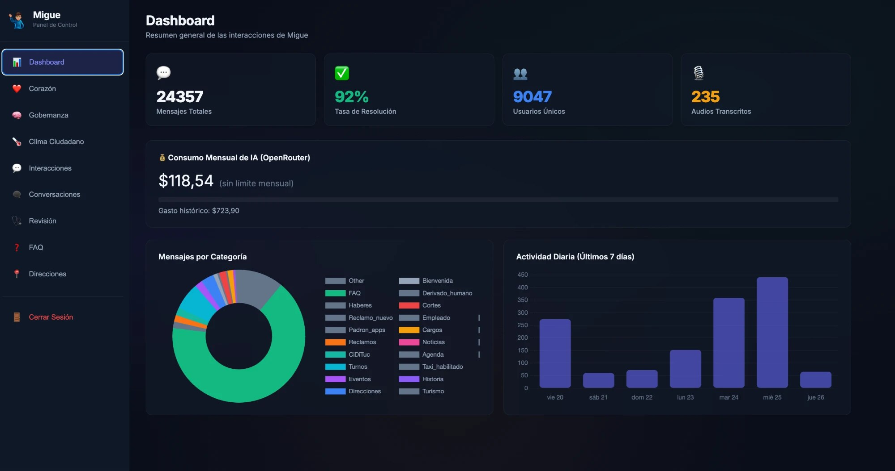

La IA redacta la nota con el mismo criterio; la persona revisa y firma.
10tipos de nota
Gobierno delCHACO

Gobernar con IA · Capacitación para los 70 municipios del Chaco
IA para Gobiernos Locales · Módulo 6
Gobernar la IA agéntica en el Estado
De la IA individual a la IA institucional
Dr. Marco Rossi · Director de Inteligencia Artificial
Municipalidad de San Miguel de Tucumán
Noviembre de 2026 · Presidencia Roque Sáenz Peña, Chaco
El plan
Módulo 6Siete preguntas, cada una con un desarrollo nuestro funcionando- 1De la IA individual a la institucional¿Qué cambia cuando la IA deja de ser de cada uno?
- 2Las capas: licencias, datos e IA soberana¿Qué se contrata, qué se conecta, qué se construye?
- 3Del piloto a la producción¿Por qué tantos proyectos no escalan?
- 4La economía de los agentes¿Cuánto cuesta de verdad?
- 5Gobernanza del agente¿Quién responde por lo que hace un agente?
- 6El costo que la factura no muestra¿Qué capacidades perdemos si delegamos todo?
- 7Hoja de ruta para Chaco¿Por dónde empieza cada municipio?
Sumate
Desde el celularEscaneá y poné tu nombre y tu municipioLo que ya funciona
San Miguel de TucumánDiez desarrollos: qué resuelve cada uno1Puertas adentro
Carga de trabajo, alertas y trazabilidad de cada proceso.
5claves en un tablero2Para el vecino
Responde trámites y consultas las 24 horas, en Ciudad Digital.
24.357consultasOrdena los reclamos de baches y sigue cada arreglo, con foto.
4.316bachesIA segura en la escuela: el docente arma la actividad en un minuto.
2.000alumnosCruza lo que dicen los vecinos en las audiencias con cada norma.
10audiencias analizadasLa IA ayuda a armar el proyecto para el barrio.
20distritosDel Excel a certificar el trabajo de las cooperativas con un clic.
218espacios verdesReservas y consultas de los turistas, con Migue.
488conversacionesFoto, costos y vidriera para cada feriante.
Marketplacecon IA1
Bloque 1 de 7
De la IA individual a la IA institucional
¿Qué cambia cuando la IA deja de ser de cada uno y pasa a ser de toda la institución?
Pregunta a la sala
Votemos¿Quién usa IA, y con qué cuenta?Cuatro niveles
De uno a todosLo que cambia en cada escalónCada uno usa la herramienta que conoce, con su propia cuenta.
- Quién paga
- Cada uno, o nadie
- Dónde quedan los datos
- En cuentas personales
- Quién responde
- No está claro
Un área elige un servicio y lo usa para su tarea.
- Quién paga
- El área, sin contrato marco
- Dónde quedan los datos
- En un proveedor, con condiciones estándar
- Quién responde
- El jefe del área
La gestión fija reglas, contrata y conecta la IA con sus sistemas.
- Quién paga
- El municipio, con contrato
- Dónde quedan los datos
- Con condiciones escritas
- Quién responde
- Quien firma
Un agente consulta, redacta y registra en los sistemas, con permisos.
- Quién paga
- Por uso: cada paso consume tokens
- Dónde quedan los datos
- El agente los lee y los escribe
- Quién responde
- Quien autorizó el permiso
De uno a todos
Generador de NotasCómo el uso de cada uno se volvió una herramienta de todosIA agéntica
Qué cambiaDel chat que responde al agente que actúa
Chat
Responde
Pregunta→Respuesta
Una llamada al modelo. Si se equivoca, lo ves y lo descartás.
Agente
Actúa
Objetivo→Planifica→Usa herramientas→Revisa→Resultado
Repite hasta terminar: muchas llamadas por tarea
Consulta sistemas, redacta y registra. Si se equivoca, el error ya está hecho.
La IA interpreta
Entiende el pedido, clasifica y propone. En CIMBA: detecta duplicados y clasifica cada reclamo.
Los sistemas ejecutan
Registran, ordenan y avisan, con reglas fijas y trazables.
Las personas deciden
Aprueban, firman y responden. En CIMBA: el cierre es un clic de una persona, con foto.
Ahora ustedes
MiguePreguntale a Migue desde el celular2
Bloque 2 de 7
Las capas de la IA institucional
¿Qué se contrata, qué se conecta y qué conviene construir?
Licencias
Qué contratarOcho condiciones antes de firmar01🔒Datos que no entrenan
Lo que cargamos no se usa para entrenar modelos.
02🌎Dónde quedan los datos
Jurisdicción, retención y borrado, por escrito.
Nuevo · Res. AAIP 188/2026 · BO 25/1103👤Cuentas institucionales
Usuarios del municipio, con alta y baja centralizadas.
04🧾Registro de uso
Quién usó qué y cuándo, exportable para auditar.
05🧮Precio por uso, con tope
Tarifa por token, topes y alertas de consumo.
06🚪Salida sin rehenes
Exportar datos y configuraciones si cambiamos de proveedor.
07🔌Acceso por API
Para integrarlo con los sistemas propios, no solo por chat.
08🛟Continuidad y soporte
Aviso de cambios de modelo, disponibilidad y soporte.
!
En San Miguel de Tucumán
Contratamos Anthropic, con su plan para empresas, y Google. Contratar IA no es una compra más: es una decisión de gobierno.
Los datos
Gobernanza de datosUn agente es tan bueno como los datos que le damos01🙋Cada dato, con dueño
Un área responde por que esté completo y al día.
34 gerentes de datos en 46 direcciones02🗂️Una sola fuente
Una base que usan todos, no una planilla por área.
CIMBA: 6 canales de reclamos, una bandeja03📏Calidad a la vista
Medir lo que falta, no esconderlo.
Applaza: 218 espacios, 8 sin ubicar, a la vista04🔒Clasificar antes de enviar
Público, interno o personal: define qué modelo puede tocarlo.
Ley 25.326 · Decreto 0596: privacidad05🔌Conectar, no copiar
El agente consulta la fuente oficial, no una copia que envejece.
Migue: trámites, turnos, reclamos y cortes06🧾Registro de lo que entra y sale
Qué preguntó el vecino, qué respondió el agente y quién lo revisó.
El tablero de Migue, en el bloque 5!
Para recordar
Un agente con datos malos se equivoca más rápido, y a escala.
Interoperar
CIMBASeis canales, una bandeja, las empresas en el celularIA soberana
¿Cuándo conviene?Depende de qué datos toca y cuánto se usa
Sensibilidad de los datos →
Volumen de uso →
Datos sensibles · poco usoComercial con cláusulas fuertes
O anonimizar antes de enviar. Ejemplo: analizar un expediente puntual.
Datos sensibles · uso masivoSoberana: propia o compartida
Modelo en infraestructura propia. Ejemplo: padrones y datos personales a escala.
Datos no sensibles · poco usoComercial con licencia institucional
Redactar, resumir, traducir, con cuentas del municipio.
Datos no sensibles · uso masivoComercial por API, con topes
Atención con información pública. Precio por uso y alertas.
Soberana conviene si…
- Toca datos personales sensibles a escala.
- El costo por uso ya supera lo que cuesta operar infraestructura.
- Hay un equipo técnico para mantenerla.
No conviene si…
- No hay presupuesto todos los meses.
- Nadie puede actualizarla ni auditarla.
?
Para 70 municipios
¿Soberanía municipal, o una infraestructura provincial compartida?
3
Bloque 3 de 7
Del piloto a la producción
¿Por qué tantos proyectos de IA se quedan en la prueba?
Checklist
Antes del pilotoSeis preguntas para llevarse al municipio✓¿Quién es el dueño?Un área que lo pide y lo va a usar todos los días.
✓¿Qué regla lo cubre?Qué puede hacer la IA, qué no, y quién firma.
✓¿De dónde salen los datos?Si están en planillas sueltas, ese es el primer trabajo.
✓¿Quién paga el uso?No el piloto: el consumo de todos los meses.
✓¿Con qué sistema se conecta?Lo que no se integra, se abandona.
✓¿Quién capacita?La capacitación va con la herramienta, no después.
?
Regla práctica
Si alguna respuesta es «no sabemos», todavía no es momento de lanzar.
4
Bloque 4 de 7
La economía de los agentes
¿Cuánto cuesta de verdad, y por qué la factura sorprende?
El multiplicador
AgentesCada paso del agente relee todo lo anterior
Chat
1 llamada
1.500Respuesta
Agente
6 pasos para una tarea
1.500Paso 1
2.300Paso 2
3.100Paso 3
3.900Paso 4
4.700Paso 5
5.500Paso 6
Una sola tarea
21.000tokens, contra 1.500 de un chat
≈ 14×Y cada reintento suma otra barra.
≈ 14×Y cada reintento suma otra barra.
Ejemplo ilustrativo: 1.500 tokens de instrucciones y pedido, y 800 más por cada paso que el agente acumula y relee.
Adiviná
Migue¿Cuánto gasta en IA un agente que atiende a 9.000 vecinos?Costo efectivo
Lo que no dice la listaEl precio por token es el piso, no la factura
Proporciones ilustrativas
Precio publicado
Contexto que se relee
Pasos del agente
Reintentos y errores
Herramientas y búsquedas
Integración, soporte y personas
Costo efectivo
Costo por tarea
tokens por paso × pasos × precio
+ reintentos
+ lo que no son tokens: integración, soporte y horas de personas
!
En Migue, de verdad
US$ 723,90 en IA para 24.357 consultas: unos 3 centavos cada una. Más las personas que validan 2.022 pendientes.
Presupuestar
AgentesCinco reglas para que la factura no sorprenda, vistas en Migue
Costo a la vista: US$ 118,54 este mes- 1Tope por usuario y por sistemaMigue: 15 consultas por minuto por conexión, a propósito.
- 2El modelo justo para cada tareaCon OpenRouter, cambiar de modelo es una configuración, no un contrato nuevo.
- 3Costo a la vistaEn su tablero: US$ 118,54 en lo que va de noviembre.
- 4Costo por tarea resueltaUnos 3 centavos de dólar por consulta, con 92 % resueltas.
- 5Alertas antes del límiteLo que nos falta: un tope mensual, con aviso antes de llegar.
5
Bloque 5 de 7
Gobernanza del agente
Supervisión humana, permisos, trazabilidad: ¿quién responde por lo que hace un agente?
Permisos
SemáforoDecreto 0596: no todo se delega igual, y la firma es humanaVerdeLo hace solo
- Responder con información pública
- Clasificar y ordenar pedidos
- Buscar y resumir normas y documentos
ÁmbarPropone; una persona aprueba
- Redactar notas y respuestas
- Cerrar un reclamo
- Cruzar lo que pidió el vecino con la norma
RojoNunca solo
- Firmar
- Sancionar o multar
- Pagar o adjudicar
- Decidir sobre los derechos de una persona
El tablero
MigueLa historia clínica de un agente, con datos de hoyLo intentan engañar
Migue se defiendePrompt injection: le piden que rompa sus reglas6
Bloque 6 de 7
El costo que la factura no muestra
Sedentarismo cognitivo: ¿qué capacidades perdemos si delegamos todo?
Lo que no se ve
Sedentarismo cognitivoEl criterio se pierde si no se usa- ✍️Firmar sin leer lo que redactó la IA
- 📋Copiar la respuesta sin chequear la fuente
- 🧭Perder el criterio para detectar un error
- 🔌No poder hacer la tarea si el sistema se cae
- 🧑🏫La IA arma el borrador; la persona decide
- ❓Pedirle que explique por qué
- 🔎Revisar la fuente antes de firmar
- 💬Usarla para discutir una idea, no para obedecer
!
Cómo lo cuidamos en SMT
34 gerentes de datos, 71 egresados y una regla: firmar es haber leído.
7
Bloque 7 de 7
Hoja de ruta para Chaco
70 municipios, distintas escalas: ¿por dónde empieza cada uno?
Hoja de ruta
Chaco · 70 municipiosEl orden que nos funcionó, a escala provincial2027 · más de nueve meses de capacitación intensiva (ECOM Chaco)
1
Reglas
Una guía provincial modelo, que cada municipio adopta con norma propia.
En SMT: Decreto 0596, diciembre de 2025Pasa cuandoCada municipio tiene su norma.2
Personas
Un referente de datos por municipio, formado y con tiempo asignado.
En SMT: 34 gerentes de datos en 46 direccionesPasa cuandoLos 70 municipios tienen referente.3
Puertas adentro
Una herramienta transversal que use todo el personal.
En SMT: Generador de Notas, 10 tipos de notaPasa cuandoSe usa todos los días, con firma humana.4
Servicios compartidos
Licencias negociadas por la provincia, datos conectados y un asistente común.
En SMT: Ciudad Digital como puerta únicaPasa cuandoHay costo por tarea medido y registro de cada acción.5
Para el vecino
Atención, reclamos y trámites con agentes, con permisos y firma humana.
En SMT: Migue, CIMBA, EstudIAPasa cuandoEl vecino lo usa y la gestión rinde cuentas.Quién hace qué
Provincia y municipiosLo que conviene hacer una vez, y lo de cada uno- 🤝Negociar licencias y precios por volumen
- 📜Guía práctica y modelo de norma
- 🗄️Infraestructura y datos compartidos
- 🎓Formar a los referentes de datos
- 📊Tablero de uso y costos
- ✍️Adoptar la norma
- 🙋Designar a su referente
- 🎯Elegir su primer problema, no su primera herramienta
- 🧾Medir y rendir cuentas
- 👂Escuchar al vecino
!
Escala
Lo que se compra una vez para 70 sale más barato y se gobierna mejor.
Conclusión
Para llevarseLo que nos llevamos de hoyGobernar la IA agéntica es decidir quién puede hacer qué
Con qué datos, con qué permisos, a qué costo y con qué firma.
📜Un decreto antes que una herramienta
🔗Conectar antes que acumular
🧮Medir el costo por tarea resuelta
🤝La IA interpreta, las personas deciden
Para llevarse
Nube de cierreDesde el celular, una o dos palabras
Gobierno delCHACO
Gobernar con IA · Capacitación para los 70 municipios del Chaco
¡Muchas gracias!
Dr. Marco Rossi · Director de Inteligencia Artificial
Municipalidad de San Miguel de Tucumán
IA para Gobiernos Locales · Módulo 6 · IALAB UBA
EN VIVO
🔒
Cargando el sistema real…
En vivoPreguntale a MigueRespuesta real del asistente de la ciudad
Probalo ahora
Escribile a Migue.
 @MigueSMT_botEn Telegram
@MigueSMT_botEn Telegram Ciudad DigitalBotón de Migue, abajo a la derecha
Ciudad DigitalBotón de Migue, abajo a la derechaMigue
Sumate a la charla
Seguime@marquitorossi
→ · Espacio · AvPág placa siguiente · ← · RePág anterior
Enter · M Migue habla · N la anterior · C se calla · Z deshace
1 … 9 abre el cajón de ese proyecto · Esc lo cierra · [ ] recurso anterior / siguiente
P reproduce el avance de CIMBA · K pregunta a Migue en vivo · X la cierra
Q QR de Migue · L foco en Migue · H oculta a Migue · F pantalla completa · ? ayuda
Enter · M Migue habla · N la anterior · C se calla · Z deshace
1 … 9 abre el cajón de ese proyecto · Esc lo cierra · [ ] recurso anterior / siguiente
P reproduce el avance de CIMBA · K pregunta a Migue en vivo · X la cierra
Q QR de Migue · L foco en Migue · H oculta a Migue · F pantalla completa · ? ayuda
Gobernar la IA agéntica en el Estado
Gobernar con IA · Chaco · Módulo 6 · IALAB UBA
Un clic para empezar (habilita el sonido y la pantalla completa) · Q: QR para vincular el celularBotonera del celular
Conectando…